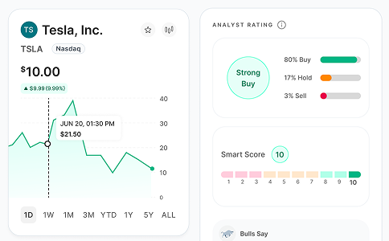
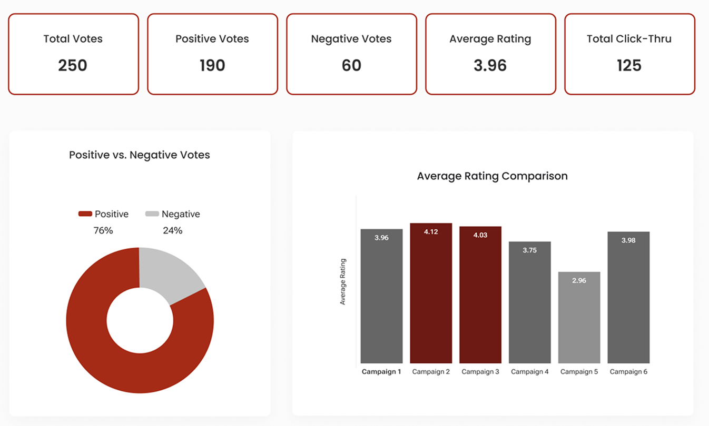
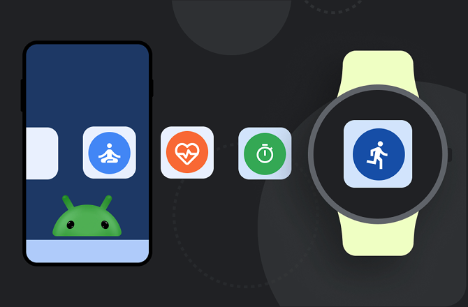

Hi — I'm Marissa.
I design digital products that take dense, technical, or high-stakes information and turn it into interfaces people can actually understand and trust.
Hi — I'm Marissa! I'm a San Diego–based UX designer who traded Chicago winters for California sunshine back in 2019.
Since 2014, I worked in corporate accounts receivable roles across multiple SaaS organizations, building a strong foundation in problem-solving and customer support. In 2021, I transitioned into UI/UX design, applying that same focus to creating intuitive, user-centered digital experiences. In my most recent role at Axos Bank, I'm leading the enhancement of the investment and self-directed trading platforms to support confident investing through intuitive design and scalable components.
In past roles, I've collaborated with diverse teams — from a small start-up to a large industry leader — to refine dashboards, streamline interfaces, and uphold design system guidelines to create unified digital experiences.
When I'm not designing, you'll find me on my yoga mat, out on the tennis court, or planning my next trip.
- BASED IN
- San Diego, CA
- CURRENTLY
- UX Designer, Axos Bank
- FOCUS
- Intuitive Interfaces · Scalable Components · Seamless Handoff
Four case studies on resolving conflict between hierarchy, usability, and scale.

Unified Trading Experience
One trading experience for stocks, ETFs, mutual funds, and Bitcoin, sharing patterns where the asset classes are genuinely alike and diverging plainly where they're not.
Crypto Send & Receive
Designing the first crypto money-movement flows inside a regulated bank, where every screen had to answer to a custodian's API before it could answer to the user.

AdThrill Business Dashboard
A B2B analytics dashboard redesign giving marketing teams the ability to drill down, sort, and filter their data — delivered as incremental, individually shippable milestones.

Developer Centers
Composable, market-specific hubs for developer.android.com, organizing thousands of scattered tools and resources into three consistent verticals.
Where I've been and what I've built.
UX Designer
Lead designer for digital experiences across the investment vertical — self-directed trading, retirement, and wealth management. Led the 0 to 1 design of crypto account management and trading from concept through launch, including send/receive flows and close partnership with the API vendor on technical and crypto-specific constraints.
Webflow Designer
Designed and launched custom websites for small businesses across diverse industries — including a Tanzania-based shuttle service, a Florida ukulele band, and a San Diego translation service — helping each expand online visibility and reach new customers.
Product Designer
Owned components, brand guidelines, and documentation within a design system used across developer.android.com. Led the redesign of responsive landing pages with dynamic CMS content, and ran cross-functional kickoffs with Google stakeholders across Editorial, Marketing, and Product to align on scope before design work began.
UI/UX Designer
Redesigned the B2B analytics dashboard, introducing sort and filter capabilities for more flexible data exploration. Led a full redesign of the B2C website and dashboard, achieving WCAG compliance and improved mobile responsiveness, grounded in foundational UX research.
Tools & Methods
What it's like to work with me, from people who have.
"Working with Marissa has been an absolute pleasure! Her ability to think strategically about design systems is unparalleled — designing solutions that are scalable, cohesive, and aligned with the broader business goals. She has a unique talent for connecting with clients and stakeholders, ensuring everyone feels heard and understood. Whether she's presenting complex design concepts or facilitating collaborative discussions, she brings clarity and confidence to every interaction."
"I had the pleasure of working with Marissa as a fellow designer. Marissa is a fun, creative team member and great with communication. She worked on several high visibility projects with our Google client and the content and marketing teams loved collaborating with her. She'd be a great addition to a team that likes getting things done!"
"I managed the delivery of our Android Developer projects when I worked with Marissa, and it was a privilege to have her on our team as a product designer. Over the year that we worked together, Marissa established herself as a go-to problem solver and reliable team player, and continued to leverage skillsets critical to the success of our product and project outcomes (UX improvements, UI prototyping, and stakeholder management, just to name a few). As a small but impactful example, Marissa helped create landing page design templates that multiple tech writing and marketing teams use to this day — a true testament to the quality and vision she had for our design system that supports over 10k pages. I can't recommend her enough — I'm sure she'll continue to perform as a designer and all-around awesome human."
"I highly recommend Marissa for any content strategy role. During our two years working together at Google, Marissa was instrumental in creating developer centers for Android Developers — a new and highly successful content format. Her unique ability to seamlessly blend design and editorial expertise brought exceptional clarity and focus to our projects. Marissa's communication skills, creativity, and results-oriented approach made her an invaluable partner. She consistently delivered innovative ideas, collaborated effectively with cross-functional teams, and created order out of chaos with grace and efficiency. Her work continues to set the standard for our developer content. Marissa is a true asset to any team!"
Let's design something that works.
Open to new opportunities in product and UX design — wherever complexity meets human usability.